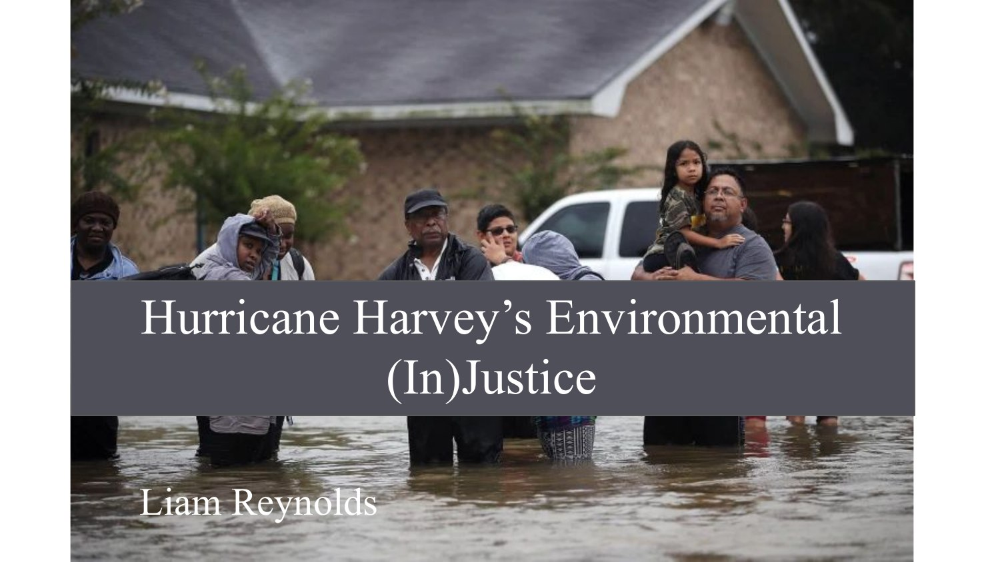

The Slideshow
Hurricane Harvey’s Environmental (In)Justice
An analysis of who Hurricane Harvey’s flooding actually hit in Harris County, Texas, in 2017. I classified the county’s census block groups by majority ethnic group — Black, White, Latinx, or Mixed, where no group holds a 60% majority — and compared that against where the water went.
The first injustice is in the maps meant to predict the flooding. FEMA’s 100-year flood zones under-predicted the flooded building area everywhere, but the miss was worst in Latinx and Mixed block groups: in Latinx block groups, about 30% of building area flooded, and nearly 22 points of that was outside the FEMA zones entirely. The distribution of the flooding itself was also uneven, with Latinx and Mixed areas exposed to more of it.
The second injustice arrived with the water: flooding triggered toxic releases across the county, and the release sites are concentrated in southeastern Houston, in the same areas where Latinx residents are concentrated. 61% of the county’s Latinx population lived within 10 km of at least one toxic site, and Latinx communities were exposed to more toxic sites at every level of exposure. The analysis is built from 10-meter rasters of the actual flooding, building footprints, and FEMA zones, with demographics from the American Community Survey.